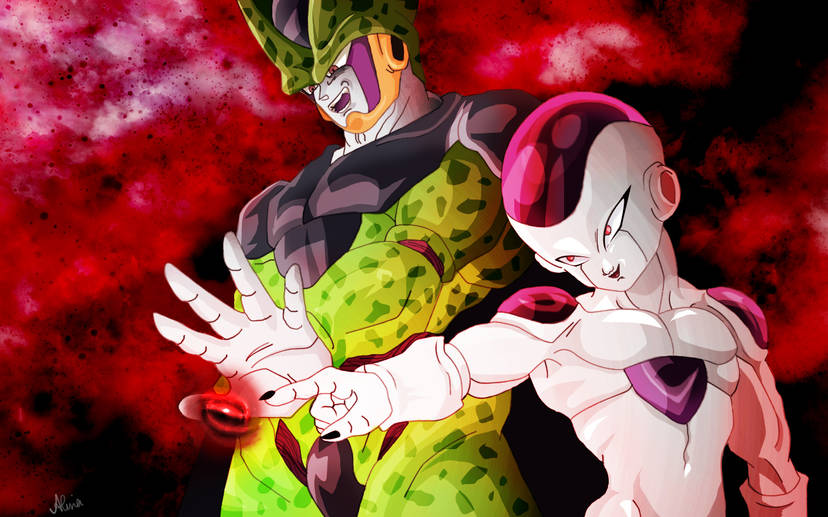

Anime is filled with unforgettable villains and characters who challenge our heroes, shake up the story, and leave a lasting impact. But what exactly makes an anime villain truly great? Let's break it down.
A villain isn't just bad for the sake of being bad. The best anime villains have clear and compelling motivations. Whether it's revenge (Scar from Fullmetal Alchemist), a warped sense of justice (Light Yagami from Death Note), or a tragic past (Pain from Naruto), great villains have goals that make them complex and relatable.
One-dimensional villains who are purely evil can be entertaining, but the most memorable antagonists are layered. They have doubts, internal struggles, or even moments of humanity. Characters like Meruem from Hunter x Hunter start as ruthless enemies but develop over time, making us question whether they're truly evil.
A great villain needs to be a real threat to the protagonist. Whether it's overwhelming power (Madara Uchiha from Naruto), strategic genius (Aizen from Bleach), or sheer unpredictability (Hisoka from Hunter x Hunter), the best villains create tension whenever they appear.
Some villains are terrifying, some are charismatic, and some are downright insane. The best anime villains have distinct personalities that make them stand out. Johan Liebert from Monster is chillingly calm, while Dio Brando from JoJo's Bizarre Adventure is flamboyantly evil. Their presence alone can define an entire series.
The best villain-protagonist dynamics are personal. Shigaraki and All Might in My Hero Academia represent clashing ideologies, while Zeref and Natsu in Fairy Tail share a tragic backstory. When a villain directly challenges the hero's beliefs or identity, the stakes feel even higher.
A great villain doesn't just appear and disappear, they leave a lasting impact on the hero and the world. Griffith from Berserk changes the entire course of the story, while Frieza from Dragon Ball Z pushes Goku to reach new heights. A villain should drive the plot forward in meaningful ways.
A truly great anime villain is more than just a bad guy, they are a driving force of the story. They challenge the hero, create conflict, and sometimes even make us question our own morals. Whether we love them, hate them, or fear them, anime wouldn't be the same without them.
In a world where humanity faces deadly monsters emerging from mysterious portals called "Gates", hunters with supernatural abilities are the only line of defense. Among them is Sung Jin-Woo, the weakest E-rank hunter, barely surviving dangerous dungeon raids. Constantly looked down upon, he struggles to support his sick mother and younger sister.